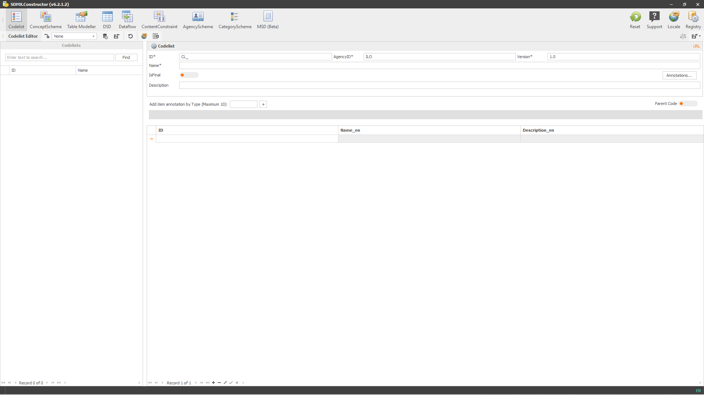
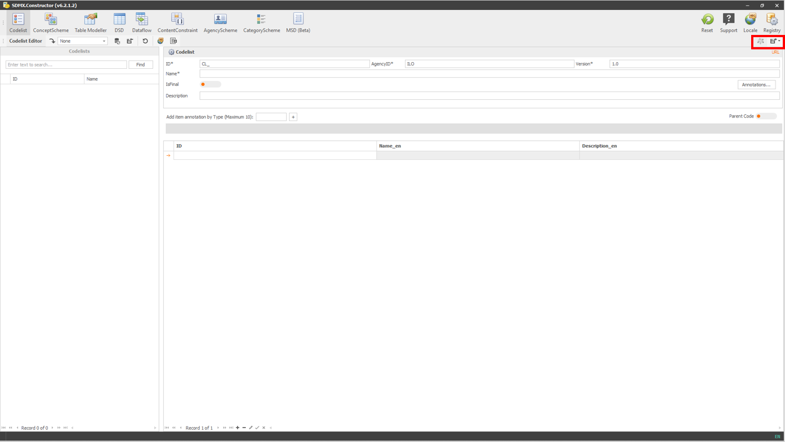
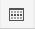
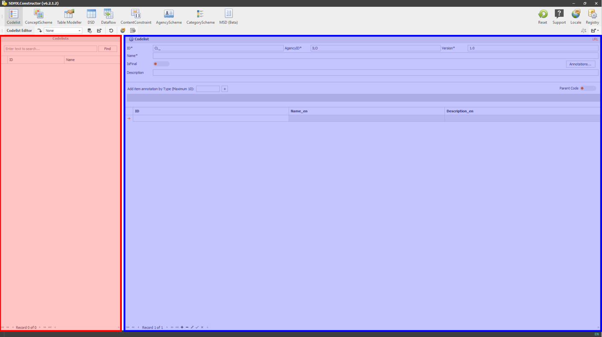

3.1 Interface overview and navigation
The user interface of the tool appears like this:
 Click here to enlarge the image
{kind=link}
It is designed to be intuitive and user-friendly. It consists of a main window or working area and menus on top that contains various menu items. The menu items are categorised into General Functions, Editors, Editor Ribbon and Preview and Export.
{kind=link}
{kind=link}
{kind=link}
{kind=link}
3.1.4 Preview and Export Menu
The fourth menu item group (Preview and Export) is in the top right corner and below the first group of menu items (as highlighted below).
 Click here to enlarge the image
{kind=link}
The options available in this group of menu items are related to the preview and export functionalities of the tool and change according to the menu item selected on the top menu (the second group of menu items (Editors)).
Below are the icons representing the menu items, along with their features. Users can change the size of these icons by right-clicking on any of them, selecting Customize, and selecting the appropriate setting in Options.
| Menu item | Names and functions |
|---|---|
 |
Export. It saves the SDMX artefact in a local folder. It is available for DSD, Dataflow, ContentConstraint, AgencyScheme, and MSD without specific options. However, options are available to save artefacts from: 1. Codelist (available in the following formats: .Stat v7 Dim, CSV and SDMX-ML) and 2. ConceptScheme, Table Modeller and CategoryScheme (available in two flavours: Save with descendants and Save without descendants). |
| or |
Push to DLM (DLM is short for Data Lifecycle Manager of the .Stat Suite). This icon becomes active (appears with colours) when the tool is connected with a DLM instance. It is available for Codelist, DSD, Dataflow, ContentConstraint, AgencyScheme, and MSD without specific options. However, options are available to save artefacts from ConceptScheme, Table Modeller and CategoryScheme. |
|  | Structure Viewer. It lets you preview the tabulation and download the MS Excel and CSV templates. It is available for DSD and Dataflow. |
3.1.5 Working area
The following section explains the working area of the tool.
Below the menu items on top, the user interface appears divided into two main parts. First, the left pane on the interface serves as a space to hold the artefacts’ list. The other side is designated to showcase relevant details (both sides are highlighted in different colours in the screenshot below). Selecting (by double-clicking) an artefact from the left pane prompts its details to appear on the screen’s right-side pane. This layout is available for Codelist, Dataflow and ContentConstraint.
 Click here to enlarge the image
{kind=link}
For ConceptScheme, Table Modeller, DSD, AgencyScheme, CategoryScheme, and MSD, an additional pane also appears in the user interface (below the placeholder for listing the artefacts - (as highlighted below)), which acts as a staging area (or a pool). It becomes a CONCEPTS POOL for ConceptScheme, Table Modeller, DSD and MSD options. And it turns into an AGENCY POOL for AgencyScheme and a CATEGORY POOL for CategoryScheme options.
The users can drag the artefacts back and forth between the pool area and the pane on the right.
{kind=link}